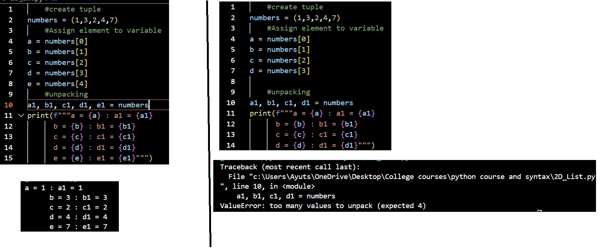

Creates a variable and value 5 is assigned to variable
Line 3: variable update
Because variable already exists system will overwrite variable with string abc
Line 2,4: output
The print statement will put things into display
datatypes
code output + breakdown
Lines 1,3,5,7,9 : variable creation
format: variable_name = value
creates a variable name to store data for easy access in future coding
Lines 2,4,6,8,20: check datatype
format: datatype(variable)
Checks the datatype stored in the variable
Lines 11-16: Multi string output
able to print in multiple lines
advanced string format
format: print(f"string {variable}")
\n : enters into a new line
Type conversion / type casting
code breakdown
Line 1,2: initiate and check datatype
Line 5: type conversion
format: type(variable)
type : datatype to convert to
convert the datatype of the variable and store into a variable. Type conversion is only
temporary and will not affect the original datatype of the variable initiated to
Notes and Rules
Note:
1) The type conversion will only last for one action before it is terminated
2) The conversion is only temporary if not stored into another variable
3) The type conversion will not affect the original variable (unless it is stored back to itself)
<1>
Pointer vs Copy
Line 3: copy list
Iterates through the list and only copies the elements into the new variable
A copied list shares the same information but is located in a seperate memory location.
This allows the copied list to be altered without affecting the original list
Line 9: referenced list
Creates a reference to the original list
A referenced list shares the same memory location as the original list. This means that
any changes made to the referenced list will affect the original list
reference vs copy
reference variable
1) contains same information
2) shares the same memory location i.e one location two names
3) Changes to reference will affect original
copied variable
1) contains same information
2) stored in a different memory location compared to the original
___i.e: two names, two seperate memory locations
3)Changes to the copy will not affect he original
unpacking list/tuple elements

code breakdown: correct unpacking (left img)
unpacking list/tuple : variables = list/tup_var
variables : a set of variables to store each element of the list/tuple
list/tup_var : variable that contains the list or tuple
Line 2: create tuple
Lines 4-8: assigning elements
This is the regular way to assign elements of a list/tuple to variables for easier future uses
Line 10: unpacking elements
This is the shorthand for assigning elements to variables
code breakdown: Incorrect unpacking (right img)
Lines 4-7: unpacking
The number of assigned varianles does not match the number of elements
Error
when unpacking, the number of assigned variables must match
the number of elements in the list or tuple else an error will occur. This
method works for both tuples and lists
notes and Rules
Rules:
1) The number of variables must match the number of elements in the list